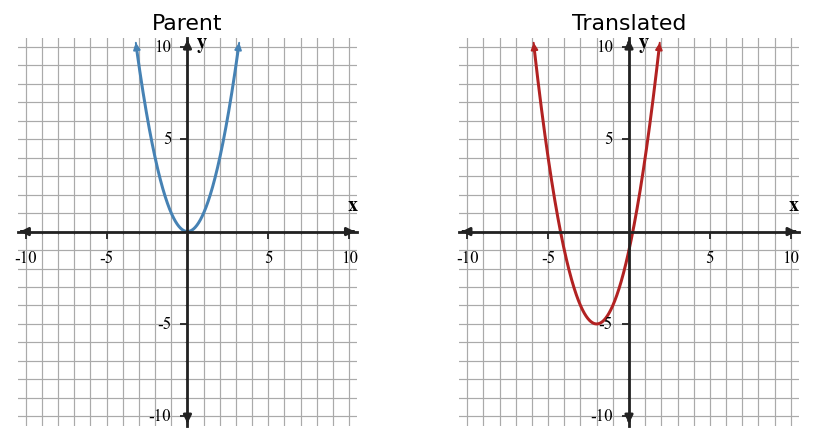

Practice special factoring patterns, including perfect-square trinomials and differences of squares. Focus on recognizing structure before expanding or factoring.
Identify why $x^2+25$ is not a difference of squares over the integers, even though both terms are squares.
Rewrite $49x^2+14x+1$ so its perfect-square structure is visible, then factor it.
Design a strategy for deciding whether any trinomial is a perfect square before factoring. Test your strategy on $9x^2+30x+25$ and $9x^2+30x+16$.
Two approaches are proposed for $18x^2-50$: first remove a GCF, or first look for a difference of squares. Recommend an approach and justify it by showing the complete factorization.
What does the ordered pair found by substitution represent on the graph of the two equations?
In a ticket context, if $s$ is student tickets and $a$ is adult tickets, what does $s+a=120$ represent?
A gardener mixes soil that is 30% compost with soil that is 60% compost to make 40 pounds of soil that is 45% compost. Write a system and solve for the pounds of each soil.
A club orders shirts. Plain shirts cost \$9 and printed shirts cost \$14. The club orders 38 shirts for \$432. Write and solve a system.
Analyze the structure of the system below without graphing every point.
Decide whether the feasible region is empty or nonempty, and justify using the relationship between the boundary lines.
A student solves the system below by adding the equations and says the solution is $y=5$.
Critique the student's conclusion. Identify the missing step and give the complete ordered-pair solution.
The table and equation describe the same line from a system. A second line is $y=-x+11$.
| $x$ | 2 | 4 | 6 |
|---|---|---|---|
| $y$ | 3 | 5 | 7 |
Synthesize the representations by writing an equation for the table line, then solve the system with the second line.
A club is choosing between two bus companies. Company A charges \$180 plus \$6 per student. Company B charges \$90 plus \$9 per student. A draft graph labels the intersection as $(30,270)$ but the written conclusion says “Company A is always cheaper.”
A graph of $y=|x|$ is shifted left $2$ units. Write the new equation.
Compare the parent graph and translated graph. Write an equation for the translated quadratic and explain how the vertex moved.

Construct an efficient strategy for determining whether $y=-3|x+2|+1$ and the table below represent the same function without graphing every point.
| $x$ | -4 | -2 | 0 | 1 |
|---|---|---|---|---|
| $y$ | -5 | 1 | -5 | -8 |
Create a context and equation for a non-linear family with starting value $12$ when $x=0$ and output greater than $30$ by $x=4$. Include a short note explaining how the context limits the useful domain.